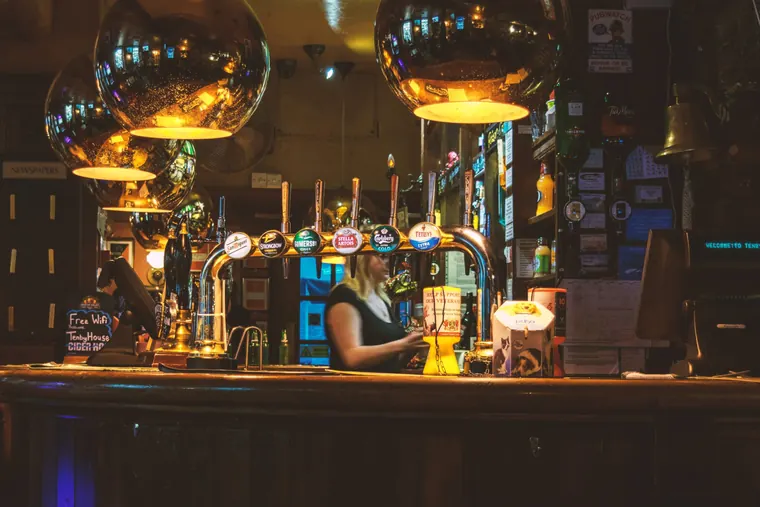
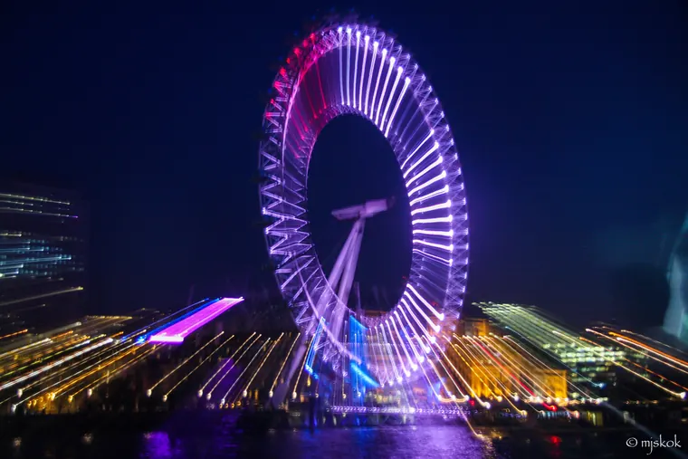
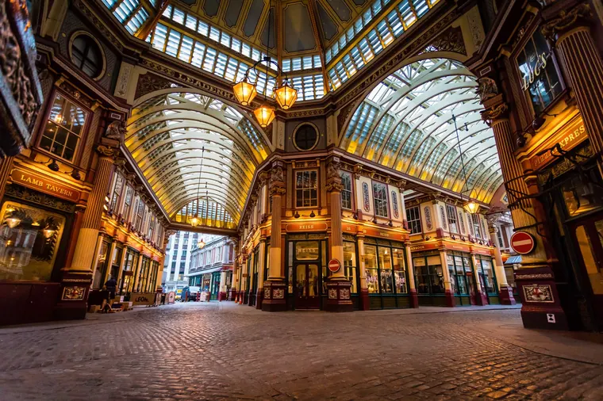

Experience London.
London is an extraordinary city full of life. To help you plan your visit, here are our favourite places to eat, drink, explore and shop while you stay at one of our Havens.
Every cuisine, close to home.
Whether you dine in London or near your Haven, there is a huge choice of cuisines. Staines has Asian, Indian, Caribbean and British restaurants. In Hayes you can choose traditional British, Mediterranean or Indian. In London you can have anything. Why not try the African cuisine at Azou in Hammersmith?
- StainesAsian, Indian, Caribbean, British
- HayesBritish, Mediterranean, Indian
- AzouHammersmith

Coffee by day, cocktails by night.
Fancy a cup of coffee or a glass of something cold? These come highly recommended by us, from local favourites near the Havens to some of London's best bars.
- Marianne's Community CaféStaines
- Nostrano LoungeStaines
- AttendantFoley St, London
- DraughtsActon Mews
- Lady Dinah's Cat EmporiumBethnal Green
- NightjarShoreditch
- AveryCity of London
- 68 and BostonSoho

The ten places you can't miss.
London is full of hidden treasures. Some are on the map, others are a little harder to find. These are our top ten places to visit while you're in London.
- The London Eye
- The British Museum
- The Tower of London
- Kew Gardens
- Somerset House
- Madame Tussauds
- The V&A
- The Wellcome Collection
- Sky Garden
- Deptford Creek low-tide walk
Art for every taste.
London is blessed with a huge variety of art galleries. Here are some that will delight your artistic senses.
- The National GalleryTrafalgar Square
- National Portrait GalleryTrafalgar Square
- Royal Academy of ArtsPiccadilly
- Tate ModernBankside
- Tate BritainMillbank
- Saatchi GalleryKing's Road
- Serpentine GalleryKensington Gardens
- Barbican Art GalleryBarbican
- Hayward GallerySouthbank
Thrills, magic and open space.
All our Havens are close to Thorpe Park. If you want something different, here are some great days out in and around London.
- Thorpe ParkClose to every Haven
- Legoland Windsor ResortWindsor
- Chessington World of AdventuresChessington
- Warner Bros. Studio Tour: The Making of Harry PotterLeavesden
- Hyde ParkCentral London

Markets, arcades and big-name stores.
There are plenty of shops and markets near the Havens and in central London. For great shopping, try these.
- Westfield LondonShepherd's Bush
- Kensington ArcadeKensington
- Camden MarketCamden Town
- Covent GardenCovent Garden
- Royal ArcadeMayfair
- Hay's GalleriaLondon Bridge
Your home away from home is ready.
Pick a Haven and book securely through Airbnb or Booking.com, or get in touch and we'll help you find the right fit.